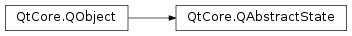

QAbstractState¶
Inherited by: QFinalState, QState, QStateMachine, QHistoryState
Note
This class was introduced in Qt 4.6.
Synopsis¶
Functions¶
- def
active() - def
machine() - def
parentState()
Signals¶
- def
activeChanged(active)
Detailed Description¶
The
PySide2.QtCore.QAbstractStateclass is the base class of states of aPySide2.QtCore.QStateMachine.The
PySide2.QtCore.QAbstractStateclass is the abstract base class of states that are part of aPySide2.QtCore.QStateMachine. It defines the interface that all state objects have in common.PySide2.QtCore.QAbstractStateis part of The State Machine Framework .The
entered()signal is emitted when the state has been entered. Theexited()signal is emitted when the state has been exited.The
PySide2.QtCore.QAbstractState.parentState()function returns the state’s parent state. ThePySide2.QtCore.QAbstractState.machine()function returns the state machine that the state is part of.
Subclassing¶
The
PySide2.QtCore.QAbstractState.onEntry()function is called when the state is entered; reimplement this function to perform custom processing when the state is entered.The
PySide2.QtCore.QAbstractState.onExit()function is called when the state is exited; reimplement this function to perform custom processing when the state is exited.
-
class
PySide2.QtCore.QAbstractState([parent=nullptr])¶ Parameters: parent – PySide2.QtCore.QStateConstructs a new state with the given
parentstate.
-
PySide2.QtCore.QAbstractState.active()¶ Return type: PySide2.QtCore.boolReturns whether this state is active.
See also
activeChanged(bool)()entered()exited()
-
PySide2.QtCore.QAbstractState.activeChanged(active)¶ Parameters: active – PySide2.QtCore.bool
-
PySide2.QtCore.QAbstractState.machine()¶ Return type: PySide2.QtCore.QStateMachineReturns the state machine that this state is part of, or 0 if the state is not part of a state machine.
-
PySide2.QtCore.QAbstractState.onEntry(event)¶ Parameters: event – PySide2.QtCore.QEventThis function is called when the state is entered. The given
eventis what caused the state to be entered. Reimplement this function to perform custom processing when the state is entered.
-
PySide2.QtCore.QAbstractState.onExit(event)¶ Parameters: event – PySide2.QtCore.QEventThis function is called when the state is exited. The given
eventis what caused the state to be exited. Reimplement this function to perform custom processing when the state is exited.
-
PySide2.QtCore.QAbstractState.parentState()¶ Return type: PySide2.QtCore.QStateReturns this state’s parent state, or 0 if the state has no parent state.
© 2018 The Qt Company Ltd. Documentation contributions included herein are the copyrights of their respective owners. The documentation provided herein is licensed under the terms of the GNU Free Documentation License version 1.3 as published by the Free Software Foundation. Qt and respective logos are trademarks of The Qt Company Ltd. in Finland and/or other countries worldwide. All other trademarks are property of their respective owners.